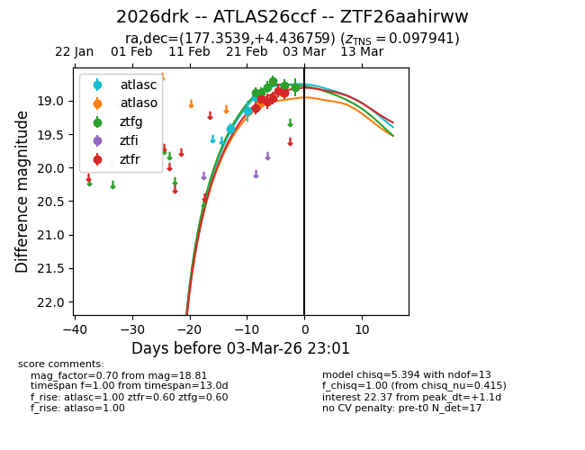
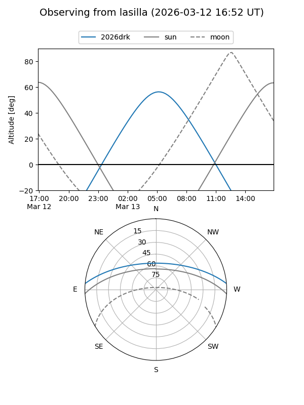
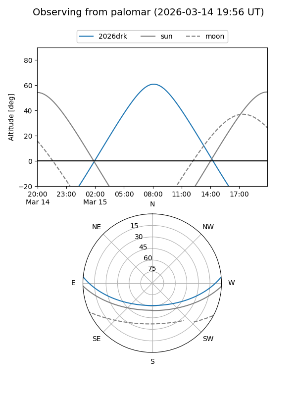
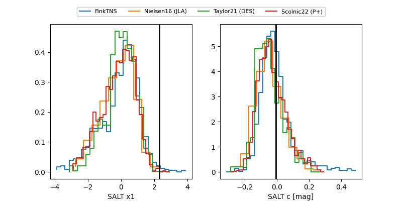

2026drk
Target 2026drk at 2026-03-03 23:02
Aliases and brokers:
FINK: link
Lasair: link
ALeRCE: link
TNS: link
YSE: link
alt names
ZTF26aahirww (ztf,fink_ztf)
2026drk (tns,yse)
ATLAS26ccf (atlas)
Coordinates:
equatorial (ra, dec) = 177.3539,+4.43676
equatorial (HMS+DMS) = 11:49:24.94,+04:26:12.33
galactic (l, b) = (267.1076,+62.91108)
Flags:
confirmed ia
Photometry:
last atlasc=18.95, atlaso=18.87, ztfg=18.81, ztfr=18.89
3 atlasc, 2 atlaso, 6 ztfg, 6 ztfr detections
Lightcurve

Visibility


Additional plots
